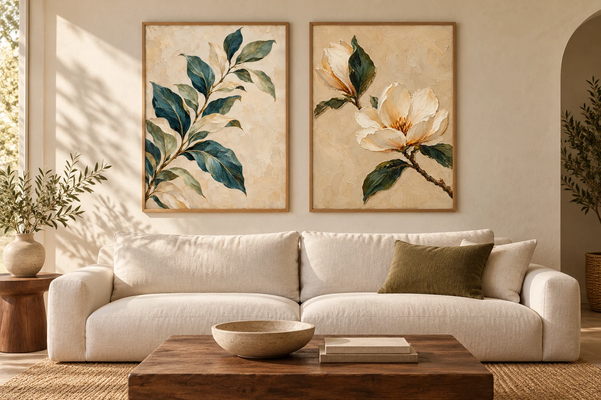
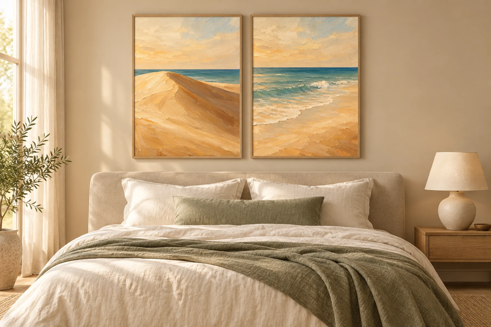

Comece pelo que sente.
Escolha cores e formas que despertam algo em você. Seu espaço pode contar sua história.
ARTE PARA HABITAR
Há uma obra que parece ter sido feita para você.
Encontre a sua e dê um novo sentido ao seu espaço.
Escolhas com intenção.
Espaços com personalidade.

CINCO JEITOS DE SENTIR
Quatorze obras, conectadas pela cor e pelo gesto.
Encontre a natureza que conversa com a sua casa.
Dunas, ondas e a luz que encontra o mar.
Conhecer a coleção ↗Folhas e flores para trazer a natureza para perto.
Conhecer a coleção ↗Barro, raízes e o calor do entardecer.
Conhecer a coleção ↗Carpas, aves e um cavalo entre água, céu e campo.
Conhecer a coleção ↗Sol e lua, unidos pelos tons da terra.
Conhecer a coleção ↗ESCOLHAS PARA INSPIRAR
Prévia do catálogo • Preços e tamanhos ilustrativos.

COSTA SERENA · UM LUGAR PARA DESACELERARIMAGINE NO SEU ESPAÇO
Algumas obras parecem feitas para estar juntas. Explore as combinações e imagine a sua favorita em casa.
Ambientações ilustrativas criadas com IA.
UM POUCO DE INSPIRAÇÃO
Escolha cores e formas que despertam algo em você. Seu espaço pode contar sua história.
Meça a parede e o móvel abaixo dela. Simule o tamanho com papel antes de decidir.
Una obras com uma cor em comum ou deixe uma peça maior ser o centro das atenções.
PRAZER, SOMOS A GALERIA LIVORE
A Livore nasce de um desejo simples: aproximar a arte do cotidiano.
Paisagens, flores e gestos de pintura para trazer mais presença aos seus espaços.